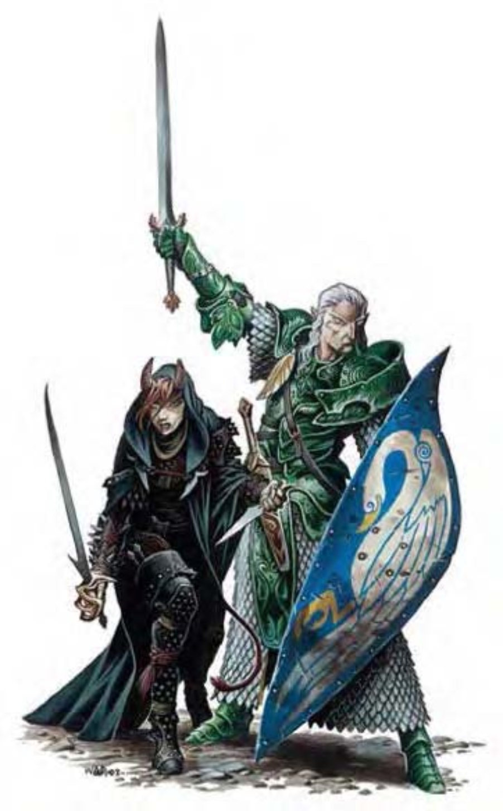

神魔裔是一种通称，用来指称那些血缘可以追溯到异界生物的对象，通常为天界生物或炼狱生物（魔族）的后裔。
异界生物的血统可以遗传好几代。虽然变化不像半天界生物或半炼狱生物那样显著，但神魔裔仍然保有一些不平凡的先祖特质。
此处列出最常见的两种神魔裔。阿斯莫是具有天界血统的人类，泰夫林则是炼狱生物之后。
阿斯莫或泰夫林没有所谓的“典型”，他们没有自己的社群或文化，多与现有社会融合。其中大半都具有人物职业。
他们看起来像是美丽儒雅的人类，内心散发出的祥和光辉映照在他们的脸庞。
阿斯莫具有神圣血缘赋予的高贵气质，通常高大、面貌姣好且和蔼。有些人还留有先祖的部分肉体特征，像是银发、金眼或异于常人的眼眸。
阿斯莫多半都为坚定的善良阵营。他们与邪恶奋战，希望其他人都能依其正道。但某些人也继承了祖先记仇与好评判的特性，但为数不多。因为对善良的绝对坚持，他们很少成为领袖，多半各行其道。其他方面则与常人无异，可完全融入人类社群。
| 资料栏位 | 阿斯莫、1级武者 中型异界生物 (原生) |
| 生命骰 | 1d8+1 (5HP) |
| 先攻 | +4 |
| 速度 | 穿着鳞甲时20英尺 (4格)；基本速度30英尺 |
| 防御等级 | 16 (+4鳞甲、+2重型盾)、接触10、措手不及16 |
| 基本攻击/擒抱 | +1 / +2 |
| 攻击 | 长剑+2近战 (1d8+1 / 19-20)；或轻型十字弓+1远程 (1d8 / 19-20) |
| 全力攻击 | 长剑+2近战 (1d8+1 / 19-20)；或轻型十字弓+1远程 (1d8 / 19-20) |
| 占据/触及 | 5英尺 / 5英尺 |
| 特殊攻击 | “昼明术” |
| 特殊能力 | 黑暗视觉60英尺、强酸抗力5、寒冷抗力5、电击抗力5 |
| 豁免 | 强韧+3、反射+0、意志+0 |
| 属性 | 力量13、敏捷11、体质12、智力10、感知11、魅力10 |
| 技能 | 医疗+4、宗教知识+1、聆听+3、骑术+1、侦察+3 |
| 专长 | 精通先攻 |
| 环境 | 温带平原 |
| 组织 | 单独、成双或组队 (3-4) |
| 宝藏 | 标准 |
| 阵营 | 通常善良 (任何) |
| 进化 | 视人物职业而定 |
| 等级修正值 | +1 |
阿斯莫喜爱公平且正大光明的竞赛。若遇上特别邪恶的对手，他们会秉持信念奋战到死。
“昼明术” (类法术能力)：阿斯莫每天可施展一次“昼明术”，施法者等级1或由施法职业中取得等级较高者。
技能：阿斯莫在进行“侦察”与“聆听”检定时具有+2种族加值。
此处列出的阿斯莫武者在计算种族修正值前，具有下列属性：力量13、敏捷11、体质12、智力10、感知9、魅力8。
阿斯莫人物具有下列种族特性：
― +2感知、+2魅力。
― 中型。
― 阿斯莫的基本行走速度为30英尺。
― 黑暗视觉可达60英尺。
― 种族技能：阿斯莫在进行“侦察”与“聆听”检定时具有+2种族加值。
― 种族专长：阿斯莫的专长数目依人物职业而定。
― 特殊攻击 (见前文)：“昼明术”。
― 特殊能力 (见前文)：强酸抗力5、寒冷抗力5、电击抗力5。
― 母语：通用语、天界语。额外语言：矮人语、精灵语、侏儒语、半身人语、木族语。
― 适合职业：圣武士。
― 等级修正值：+1
他们酷似人类，但略带邪气，眼神中带有一丝狡黠。前额上突出两只短角。
泰夫林诡计多端又不可信赖，他们多半依从所继承的心性倾向，期待邪恶的召唤。某些泰夫林唾弃自己的天性，但被社会发现时，仍需背负众人的异样眼光。不管走到何处，都得承受着异界余孽的刻板印象。
除了被众人厌恶的举止外，许多泰夫林与常人无异。某些泰夫林具有短角、尖牙、红眼、硫味体臭甚至蹄脚，每个泰夫林都不相同。
泰夫林在人类社会中通常地位很低，多半从事游荡者、刺客或间谍。偶有能建立权势的泰夫林，但真面目被揭发后马上就会被放逐。
| 资料栏位 | 泰夫林、1级武者 中型异界生物 (原生) |
| 生命骰 | 1d8+1 (5HP) |
| 先攻 | +1 |
| 速度 | 30英尺 (6格) |
| 防御等级 | 15 (+1敏捷、+3镶嵌皮甲、+1轻型盾)、接触11、措手不及14 |
| 基本攻击/擒抱 | +1 / +2 |
| 攻击 | 细剑+3近战 (1d6+1 / 18-20)；或轻型十字弓+2远程 (1d8 / 19-20) |
| 全力攻击 | 细剑+3近战 (1d6+1 / 18-20)；或轻型十字弓+2远程 (1d8 / 19-20) |
| 占据/触及 | 5英尺 / 5英尺 |
| 特殊攻击 | “黑暗术” |
| 特殊能力 | 黑暗视觉60英尺、寒冷抗力5、电击抗力5、火焰抗力5 |
| 豁免 | 强韧+3、反射+1、意志-1 |
| 属性 | 力量13、敏捷13、体质12、智力12、感知9、魅力8 |
| 技能 | 唬骗+4、躲藏+5、潜行+1、巧手+1 |
| 专长 | 专攻武器 (细剑) |
| 环境 | 温带平原 |
| 组织 | 单独、成双或成队 (3-4) |
| 宝藏 | 标准 |
| 阵营 | 通常邪恶 (任何) |
| 进化 | 视人物职业而定 |
| 等级修正值 | +1 |
鬼鬼祟祟、偷偷摸摸及密谋算计就是泰夫林的行事风格。他们喜欢埋伏，并竭力避免公平战斗。
“黑暗术” (类法术能力)：泰夫林每天可施展一次“黑暗术”，施法者等级等同职业等级。
技能：泰夫林在进行“唬骗”与“躲藏”检定时具有+2种族加值。
此处列出的泰夫林武者在计算种族修正值前，具有下列属性：力量13、敏捷11、体质12、智力10、感知9、魅力8。
泰夫林人物具有下列种族特性：
― +2敏捷、+2智力、-2魅力。
― 中型。
― 泰夫林的基本行走速度为30英尺。
― 黑暗视觉可达60英尺。
― 种族技能：泰夫林在进行“唬骗”与“躲藏”检定时具有+2种族加值。
― 种族专长：泰夫林的专长数目依人物职业而定。
― 特殊攻击 (见前文)：“黑暗术”。
― 特殊能力 (见前文)：寒冷抗力5、电击抗力5、火焰抗力5。
― 母语：通用语、炼狱语。额外语言：龙语、矮人语、精灵语、地精语、兽人语。
― 适合职业：游荡者。
― 等级修正值：+1